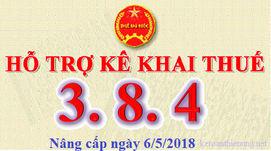

Ngày 06/05/2018 Tổng cục thuế thông báo nâng cấp lên Phần mềm HTKK 3.8.4, đây là phần mềm hỗ trợ kê khai thuế mới nhất miễn phí cho các Doanh nghiệp, cùng với ứng dụng Khai thuế qua mạng (iHTKK) 3.6.4 và iTaxViewer 1.4.6. Tải Phần mềm HTKK 3.8.4, về tại đây:
Nhằm đáp ứng yêu cầu nghiệp vụ liên quan đến biên lai thu tiền phí, lệ phí theo Thông tư số 303/2016/TT-BTC ngày 15/11/2016 của Bộ Tài chính hướng dẫn việc in, phát hành, quản lý và sử dụng các loại chứng từ thu tiền phí, lệ phí thuộc ngân sách nhà nước và bổ sung một số chức năng kê khai hồ sơ khai thuế theo yêu cầu nghiệp vụ phát sinh, Tổng cục Thuế đã hoàn thành nâng cấp ứng dụng Hỗ trợ kê khai (HTKK) phiên bản 3.8.4, ứng dụng Khai thuế qua mạng (iHTKK) phiên bản 3.6.4, ứng dụng Hỗ trợ đọc, xác minh tờ khai, thông báo thuế định dạng XML (iTaxViewer) phiên bản 1.4.6, cụ thể như sau:
1. Nâng cấp ứng dụng HTKK, iHTKK đáp ứng yêu cầu nghiệp vụ theo Thông tư số 303/2016/TT-BTC: Cập nhật chức năng kê khai và tra cứu báo cáo về biên lai thu tiền phí, lệ phí theo Thông tư số 303/2016/TT-BTC bao gồm:
- Thông báo phát hành biên lai;
- Báo cáo tình hình sử dụng biên lai thu phí, lệ phí;
- Thông báo kết quả hủy biên lai thu tiền phí, lệ phí;
- Báo cáo mất cháy hỏng biên lai;
- Báo cáo nhận in, cung cấp phần mềm tự in biên lai.
2. Nâng cấp ứng dụng iHTKK để bổ sung chức năng kê khai Tờ khai thuế thu nhập doanh nghiệp đối với thu nhập từ chuyển nhượng vốn (mẫu số 05/TNDN) ban hành kèm theo Thông tư số 156/2013/TT-BTC ngày 6/11/2013 của Bộ Tài chính về việc hướng dẫn thi hành một số điều của luật quản lý Thuế; Luật sửa đổi, bổ sung một số điều của luật quản lý thuế và nghị định số 83/2013/NĐ-CP ngày 22/7/2013 của Chính phủ.
3. Nâng cấp ứng dụng HTKK để bổ sung một số chức năng kê khai và tra cứu hồ sơ khai thuế theo yêu cầu nghiệp vụ phát sinh, bao gồm:
- Giấy đề nghị hoàn trả khoản thu ngân sách nhà nước (mẫu 01/ĐNHT – dành cho hoàn thuế GTGT) ban hành kèm theo Thông tư 156/2013/TT-BTC ngày 06/11/2013.
- Bảng kê sử dụng chứng từ khấu trừ thuế TNCN ban hành kèm Thông tư số 37/2010/TT-BTC ngày 18/3/2010 của Bộ Tài chính hướng dẫn về việc phát hành, sử dụng, quản lý chứng từ khấu trừ thuế thu nhập cá nhân tự in trên máy tính.
4. Nâng cấp ứng dụng iTaxViewer:
- Nâng cấp ứng dụng iTaxViewer phiên bản 1.4.6 đáp ứng các nội dung nâng cấp của ứng dụng Hỗ trợ kê khai thuế (HTKK) phiên bản 3.8.4, ứng dụng Khai thuế qua mạng (iHTKK) phiên bản 3.6.4.
Lưu ý: Bắt đầu từ ngày 07/05/2018, khi lập hồ sơ khai thuế liên quan đến nội dung nâng cấp nêu trên, tổ chức cá nhân nộp thuế sẽ sử dụng các chức năng kê khai tại ứng dụng HTKK 3.8.4, iHTKK 3.6.4 thay cho các phiên bản trước đây.
Tải Phần mềm HTKK 3.8.4 về tại đây:

- Tải Ứng dụng iHTKK phiên bản 3.6.4, iTaxViewer phiên bản 1.4.6: Thực hiện kê khai hoặc tải bộ cài tại đây:
http://kekhaithue.gdt.gov.vn và http://thuedientu.gdt.gov.vn
------------------------------------------------------------------------------------------
